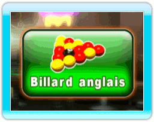
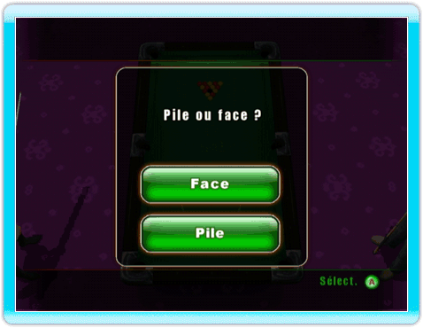
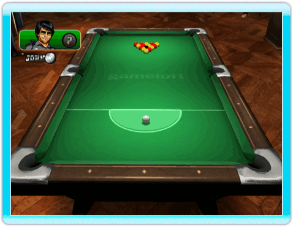

24 |
Règles du billard anglais |
 |
 Chaque joueur doit rentrer les billes de son groupe, les rouges ou les jaunes. Le joueur qui rentre la noire après avoir rentré toutes les billes d’un des deux groupes dans les règles gagne la partie. Pile ou face Le joueur qui cassera le premier sera désigné à pile ou face. Le gagnant cassera automatiquement. Casse Une bille doit être rentrée ou 2 billes doivent remonter la table au-dessus de la ligne formée par les deux trous du milieu.Faute standard : les billes sont remises en place et la blanche est jouée depuis le D. Si un joueur rentre la blanche lors de la casse, c'est une faute. Les billes sont remises en place et le joueur suivant joue la blanche depuis le D. Si la noire est rentrée lors de la casse, on remet les billes en place et c'est à l'autre joueur de casser. Après la casse initiale, le casseur doit indiquer quelle couleur il choisit. La seule exception est une casse irrégulière. Coup libre Lors du premier coup consécutif à une faute, n'importe quelle bille peut être jouée ou rentrée. Le joueur peut placer la blanche et la jouer depuis n'importe où dans la zone de départ (D). Coups sautés Les coups sautés sont interdits au billard anglais. Un coup sauté est une faute. |
 |
 |
 |